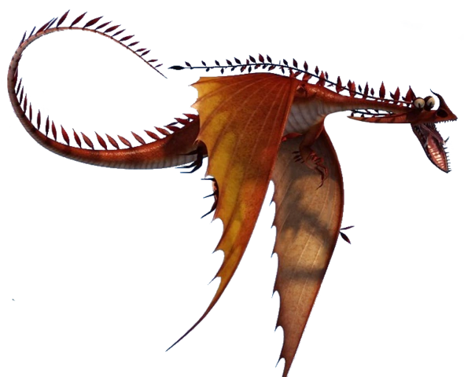

Le dragon aux ailes tranchantes comme des rasoirs
| Catégorie | Mystérieux |
| Type de feu | Jets d'acide corrosif |
| Taille | 7 mètres |
| Envergure | 16 mètres |
| Poids | 450 kg |
| Couleur | Noir, gris sombre |
| Apprivoisable | Rare |
L'Aile de la Mort est un dragon dont les grandes ailes membraneuses peuvent servir d'armes tranchantes. Il crache un jet d'acide à haute cadence de tir, ce qui le rend très dangereux à distance. Ce dragon est souvent utilisé par les chasseurs de dragons comme arme de guerre. Sa silhouette sombre et ses ailes en lame le rendent facilement reconnaissable dans les airs.